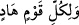

bilmiyorsa ikisi birden boğulup giderler. İşte ehliyetsiz mürşid ile müridin durumu buna
benzer.
Gerçek müride gereken, nefis terbiyesi konusunda zamanın efendisi olan kâmil bir
müsellikin yâni seyr ü sülûk eğitimi vermeye tam ehil bir kimseye bağlanmak ve onun
iradesince davranıp bu yolun hükümlerine teslim olmak ve helak olanların çokluğuna
bakmamaktır. Çünkü Allah (c.c.)’ın fevkinde bir helak edici mevcut değildir.
Ey tâlibler! “Siz doğru yolda olduğunuz” Hakk’a giden yol üzerinde bulunduğunuz
“takdirde sapan kimse” bu yolda boğulanlar “size zarar vermez.”
Ey hidayet yolu üzerinde inayet (Hakk’ın yardımı) cezbelerine tâlib olanlar ve ey hile
ve isyan yolu üzerinde kahır ve terkedilmişlik zincirleriyle bağlanan dalalet ehli!”
“Hepinizin dönüşü Allah’adır.”
“O size yaptıklarınızı haber verecektir.” Yani iyi amellerinizin sevabının lezzetini ya
da kötü amellerinizin cezâsının elemini size tattıracaktır.
Şu halde toplu mânâ şöyle olmaktadır:
Sülûk esnasında müridin, sıdk ve irade ehlinden yani mertebesi yüksek müridlerden
bir kimsenin terbiye için kendisini kabul etmesine iltifat etmemesi ve onu bağlanılması
gereken bir şeyh zannederek, aldanmaması gerekir. Bu durum, Hakk’a vasıl olmuş kâmil
bir yol gösterici konrolünde sülûkünü tamamlayıncaya kadar böyle devam etmelidir.
Daha sonra eğer şeyhi, kendisinin şeyhlik rütbesine erdiğine ve buna hak kazandığına,
artık insanları terbiye ve hakikate davet hususunda yetişmiş olduğuna dair bir işarette
bulunursa, işte o zaman onun büyük bir dikkatle müridlere yol göstirici ve mürşid
olması câiz olur. Nitekim Allah Teâlâ: (  ) “Her toplumun bir yol göstericisi
vardır.” (er-Ra’d, 13/7) buyurmuştur.
Zamanımıza gelince, artık iş iyiden iyiye çığırından çıkmıştır. Öyle hale geldi ki,
ömründe hiç mürid olmayan kimseler, şeyh olduklarını iddia ediyorlar! Cahil ve sapık
kimseler sırf cehalet ve sapıklıklarından dolayı, şan ve şöhretlerinin yayılıp
müridlerinin artmasına tamah ederek şeyhliklerini ilan eder hale geldiler. Bu büyük
vazifeyi, bu şerefli işi, çocuk oyuncağı ve şeytanın maskarası hâline getirdiler. Hatta
mürşidliği, manevi vasıfları taşımamasına rağmen, babadan oğula miras olarak geçen
bir şey haline getirdiler. Ne zaman o şeyhlerden birisi ölse, oğlunu (ister çocuk olsun,
ister büyük adam olsun) yerine oturtuyorlar. Ondan hırkalar giyiyorlar, onunla teberrük
ediyorlar ona meşâyiha davrandıkları gibi davranıyorlar. Bu musibet yaygın bir hal aldı.
Belki de bu yol artık tamam oldu, izleri bile ortadan kalktı. Şüphesiz Allah, bu işlerin iç
yüzünü en iyi bilendir. Buraya kadar olan îşarî yorum, et-Te’vîlâtü’n-Necmiyye’den,
alınmıştır.
[58]. Müslim, Îman, 78